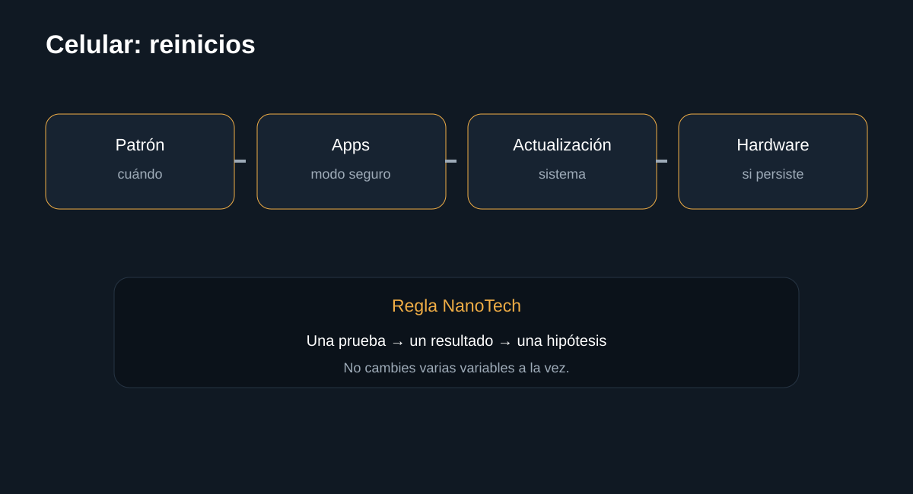

Introducción

Diagnóstico por patrón, aplicaciones, actualización, almacenamiento y temperatura. La guÃa busca que puedas separar causas antes de sustituir componentes.
Antes de empezar: seguridad
Desconecta el equipo cuando corresponda y no realices mediciones peligrosas sin formación e instrumental. En baterÃas, fuentes y placas, detén el procedimiento si detectas daño fÃsico, lÃquido, olor extraño o calor anormal.
- Documenta el estado inicial.
- Haz una sola modificación cada vez.
- Conserva tornillos, cables y configuración original.
Herramientas
1. Registrar cuándo ocurre
El patrón puede señalar una aplicación, temperatura o carga concreta.
Qué hacer
- Anota si ocurre al usar una app.
- Observa si sucede al cargar.
- Comprueba si coincide con calentamiento.
Registra el resultado antes de continuar.
InterpretaciónEl patrón puede señalar una aplicación, temperatura o carga concreta.
2. Actualizar
Las actualizaciones pueden corregir fallos conocidos.
Qué hacer
- Instala actualizaciones oficiales.
- Reinicia.
- Comprueba si el problema continúa.
Registra el resultado antes de continuar.
InterpretaciónLas actualizaciones pueden corregir fallos conocidos.
3. Aislar aplicaciones
Si el fabricante ofrece modo seguro, úsalo para separar apps de terceros.
Qué hacer
- Entra al modo seguro según el modelo.
- Comprueba estabilidad.
- Si se estabiliza, revisa aplicaciones instaladas recientemente.
Registra el resultado antes de continuar.
InterpretaciónSi el fabricante ofrece modo seguro, úsalo para separar apps de terceros.
4. Si persiste
Puede requerir diagnóstico de baterÃa, alimentación o placa.

Qué hacer
- Haz copia de seguridad.
- No restaures de fábrica antes de proteger los datos.
- Deriva a servicio técnico si persiste.
Registra el resultado antes de continuar.
InterpretaciónPuede requerir diagnóstico de baterÃa, alimentación o placa.
Diagnóstico final
Fuentes y notas
Google documenta rutas de solución para Android que incluyen actualización y pasos de diagnóstico cuando el dispositivo se reinicia o falla. Los menús cambian según fabricante y versión.